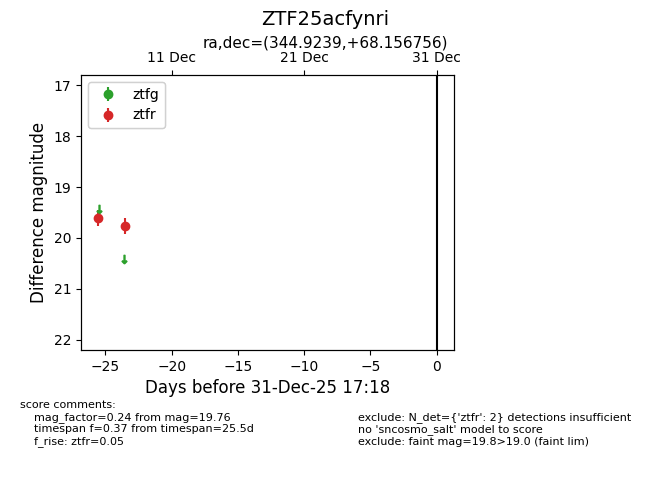
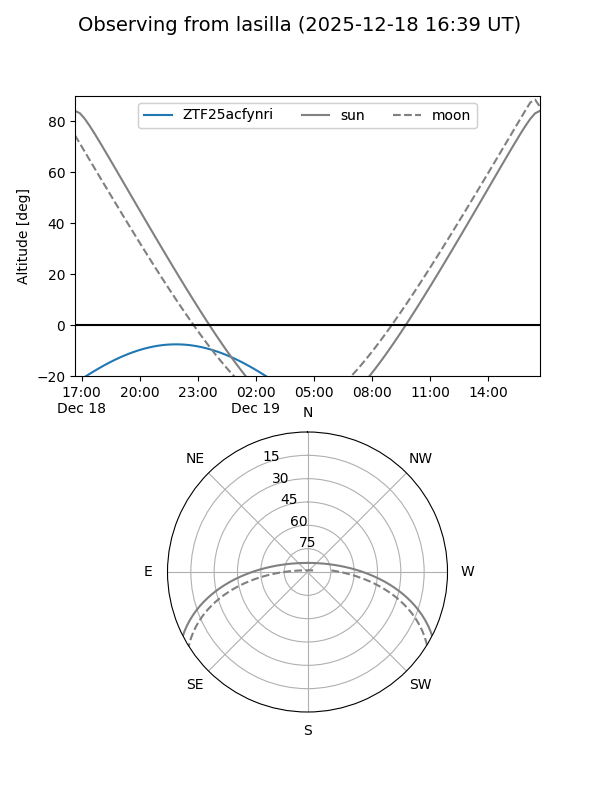
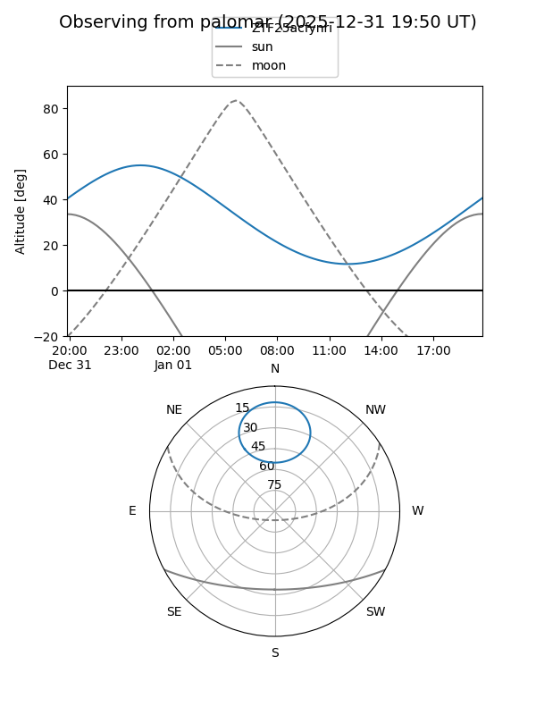

ZTF25acfynri
Target ZTF25acfynri at 2025-12-18 11:17
Aliases and brokers:
FINK: fink-portal.org/ZTF25acfynri
Lasair: lasair-ztf.lsst.ac.uk/objects/ZTF25acfynri
ALeRCE: alerce.online/object/ZTF25acfynri
alt names
ZTF25acfynri (ztf,fink_ztf)
Coordinates:
equatorial (ra, dec) = 344.9239,+68.15676
equatorial (HMS+DMS) = 22:59:41.74,+68:09:24.32
galactic (l, b) = (112.8059,+7.50980)
Photometry
last ztfr=19.76
2 ztfr detections
Lightcurve

Visibility


Additional plots